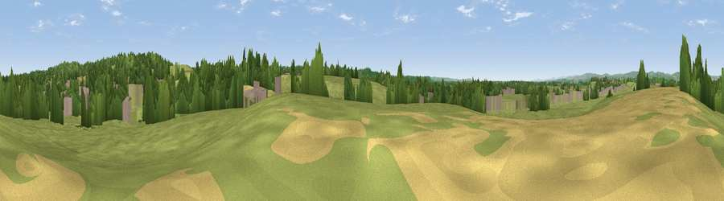

Catherine Hill
#32935 in England · top 60% of its area beats it · near OlvestonThe view, rendered

A 360° render of this exact spot computed from the terrain model, tree cover and land cover — summer colours, afternoon light, calibrated against photographs of famous viewpoints. Real trees, hedges and buildings will differ in detail.
The panorama
Grey silhouette: terrain skyline in each direction (720 bearings, Earth curvature and refraction included). Dashed green: skyline with trees (+15 m) and buildings (+8 m) as obstacles. Blue strip: how far the ground is visible on each bearing.
Where the view opens
Wedge length = distance to the farthest visible ground on that bearing (vegetation-aware). Rings at 10, 25 and 50 km.
What fills the view
57% grassland · 27% woodland · 9% built-up · 7% cropland
Angular shares of the visible panorama (visual magnitude), not map area. Landscape diversity 0.48 (0–1 Shannon).
Key numbers
More beautiful places nearby
The staircase of upgrades: each row has a higher view potential than everything closer. Driving times are estimates from straight-line distance, calibrated against real road routing — check an actual route before setting out.
| Place | Direction | Drive | Score |
|---|---|---|---|
| Viewpoint near Old Down | E · 1 km | ~4 min | 50.3 |
| Viewpoint near Almondsbury | SSE · 3 km | ~7 min | 54.8 |
| Viewpoint near Almondsbury | S · 3 km | ~8 min | 68.3 |
| Viewpoint near Hewelsfield | N · 14 km | ~26 min | 69.6 |
| Viewpoint near Hewelsfield | N · 15 km | ~26 min | 70.7 |
| Viewpoint near North Nibley | ENE · 17 km | ~30 min | 76.3 |
| Viewpoint near Stinchcombe | NE · 18 km | ~31 min | 80.5 |
| Garway Hill | NNW · 41 km | ~61 min | 84.6 |
51.57846, -2.58169 · source: osm peak · position refined by local search. Computed location — check access rights before visiting.